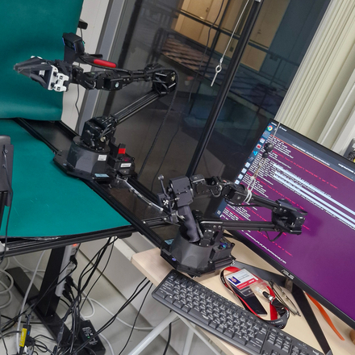
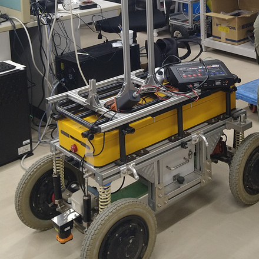
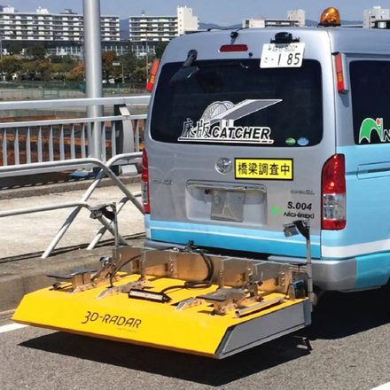

Muhammad Angga Muttaqien
I am a Research Assistant at the Embodied AI Research Team, National Institute of AIST (産業技術総合研究所), working under the supervision of Dr. Ryo Hanai and Dr. Tomohiro Motoda. My research focuses on foundation models, world models, and deep reinforcement learning for building general-purpose robots.
I hold a Master’s degree in AI and Robotics from the University of Tsukuba, where I studied under Prof. Akihisa Ohya as part of the Human-Centered AI Program funded by MEXT. My graduate research explored curriculum-guided deep reinforcement learning for home robots with natural language interaction.
- [June 2026] Our research paper has been submitted and accepted at IEEE ICCAS 2025, Sapporo, Japan.
- [August 2025] Presented our research on robotic manipulation at IEEE CASE 2025, Los Angeles, US.
- [April 2025] Officially joined the Embodied AI Research Team at AIST Tokyo.
- [January 2025] Presented our research on multimodal perception at IEEE/SICE SII 2025, Munich, Germany.
- [August 2024] Presented our two research papers on deep learning at IEEE CIS-RAM 2024, Hangzhou, China.
Research
My research focuses on embodied artificial intelligence, integrating foundation models, world models, and deep reinforcement learning to build general-purpose robots. I envision future AI robots that can perform with unseen objects, layouts, and tasks, while interacting with humans seamlessly (and safely) in the real world.
🎓 Thesis Research: Curriculum-based Deep Reinforcement Learning for Home Robot Navigation with Natural Language Interaction (for Master’s Program in Computer Science)
Publications

2026 IEEE International Conference on Control, Automation, and Systems (ICCAS), Sapporo, Japan
TLDR: A lightweight online adaptation framework that enables imitation learning-based robot manipulation policies to immediately correct execution errors from human feedback without retraining the underlying policy.
2025 IEEE International Conference on Automation Science and Engineering (CASE), Los Angeles, US
TLDR: A perception-action pipeline using annotation-guided visual prompting and Action Chunking with Transformers (ACT) enables adaptive, data-driven pick-and-place operations in cluttered retail environments with improved grasp accuracy and success rates.
2025 IEEE/SICE International Symposium on System Integrations (SII), Munich, Germany
TLDR: A structured pipeline integrating CLIP, SAM, and gradient-based attention enhances object masking precision for convenience store products, enabling more accurate and adaptive robotic manipulation through multimodal fine-tuning and effective image-text alignment.
2024 IEEE International Conference on Cybernetics and Intelligent Systems (CIS), Hangzhou, China
TLDR: An incremental curriculum learning (ICL) framework combined with deep reinforcement learning (DRL) enables robots to progressively master task-based navigation from human instructions, improving training efficiency, generalization, and performance in dynamic indoor environments.
2024 IEEE International Conference on Cybernetics and Intelligent Systems (CIS), Hangzhou, China
TLDR: A comparative analysis of YOLOv5 and YOLOv8 reveals that YOLOv5 can match or surpass YOLOv8 in precision for robotic object detection, highlighting the importance of architectural simplicity, dataset factors, and contextual evaluation in selecting real-time detection frameworks.
Projects

2025 — National Institute of AIST (産業技術総合研究所)
TLDR: This project integrates ALOHA (a bimanual robotic manipulator) with a fine-tuned GR00T foundation model using our prepared demonstration data to perform pick-and-place operations on diverse products in Japanese convenience stores. Besides this project, I also contributed to the AIST Bimanual Manipulation Dataset.

2023 — University of Tsukuba (知能ロボット研究室)
TLDR: Collaborated with colleagues from the Intelligent Robot Laboratory at the University of Tsukuba to develop a mobile robot capable of seamless navigation along predefined outdoor routes. The team successfully completed the challenge and was recognized among the top-performing entries in the competition. 🎉

2018-2021 — GRID Co., Ltd. (株式会社グリッド), Tokyo
TLDR: As an AI Research Engineer, contributed to multiple industrial AI applications, including Unit Commitment Automation for thermal and hydro power systems, mechanical drawing analysis, material property segmentation, and road damage detection for Nichireki Corporation.
About Me
I was born and raised in Indonesia and am currently based in Tokyo, Japan. Beyond research, I enjoy exploring the intersection between technology, philosophy, and human nature—reflecting on how AI as the most disruptive technology of the 21st century shapes our perception of knowledge and human thinking. In my spare time, I like reading thought-provoking books (such as Sapiens and LIFE 3.0), writing analytical essays, and playing strategy-based games.